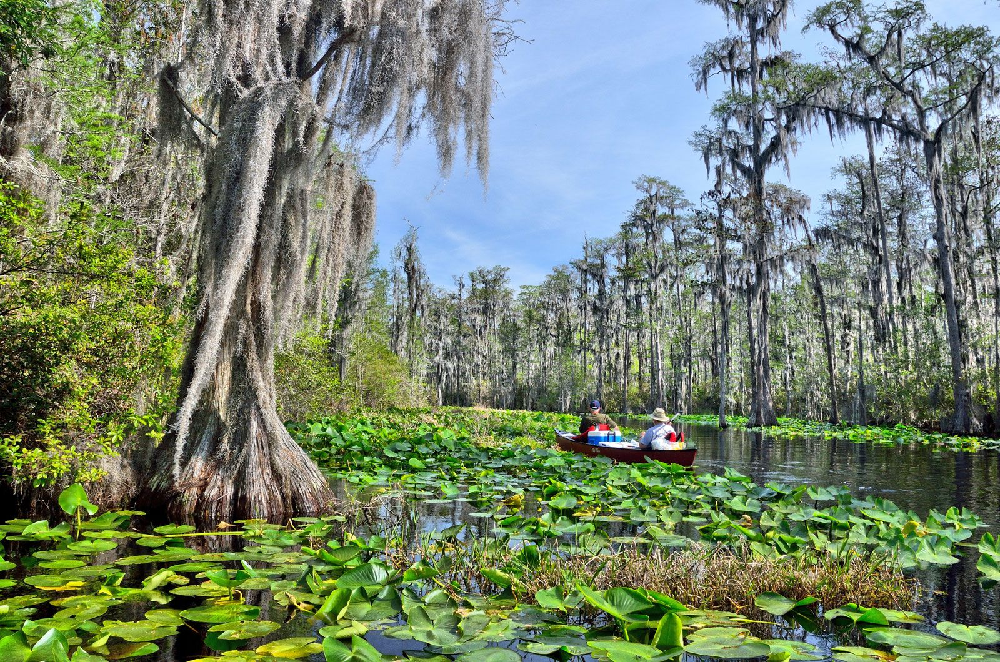
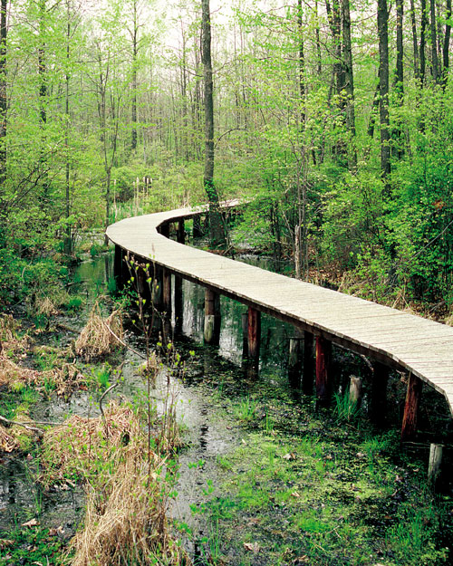
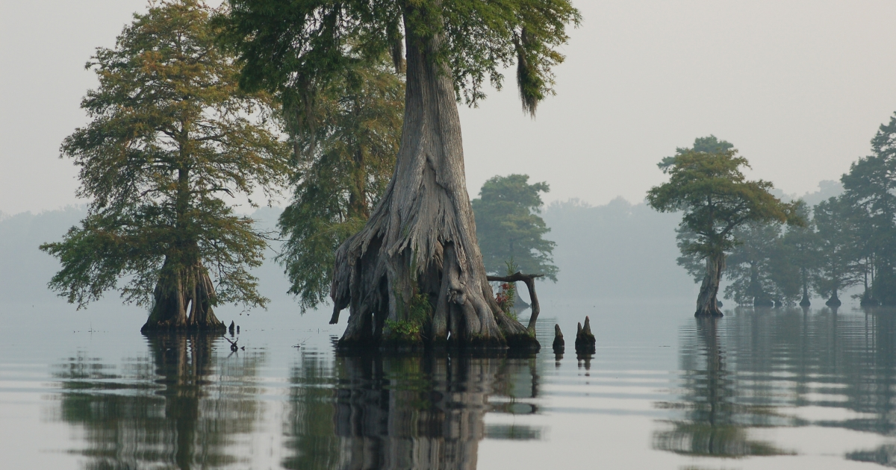
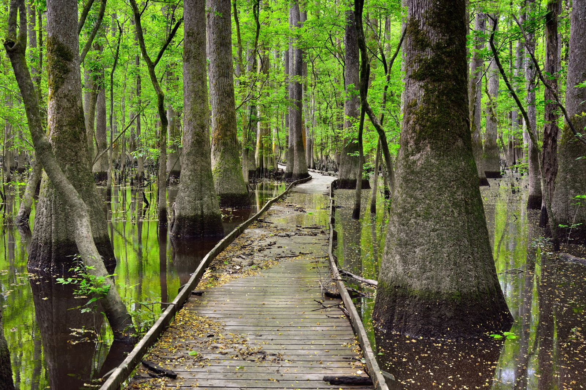
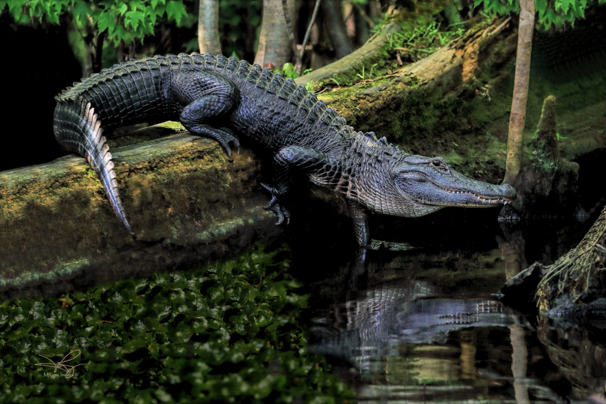
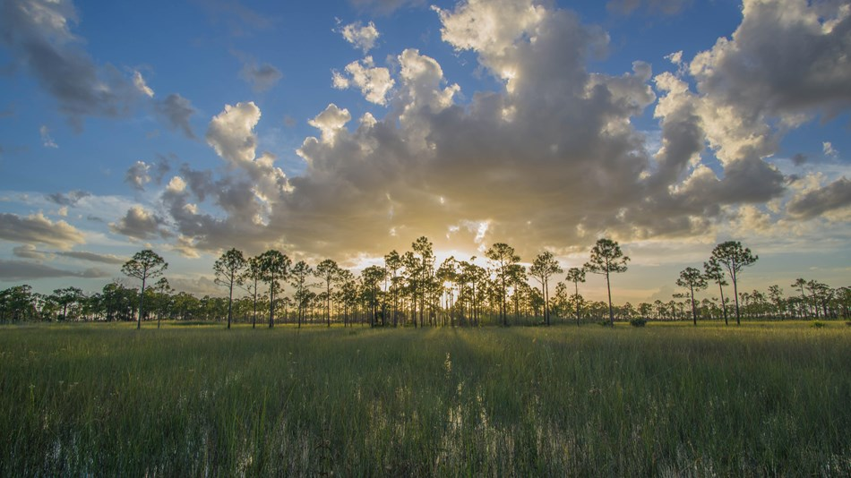

I woke up a few minutes after midnight, when the whining in my ear and the pinpricks of pain along my jaw brought to mind a word, glowing red like the jointed numbers on an alarm clock: mosquitoes.
Without opening my eyes, I extended my arm to discover that the T-shirt I had hung across the backseat window had fallen askew, providing easy access for the insects now attending to my face.
A couple of inches away: the squeaking duress of a sleeping pad, the slap of a hand and a forehead.
Jeff’s flashlight illuminated the ceiling of the rented SUV, where mosquitoes bounced off the cloth, like astronauts in Zero-G. In a fit of frustration, I smashed one with my palm, painting a comet tail of blood across the beige upholstery.
It took a beat before the absurdity of the moment set in, before we submitted to a tired laughter.
“Okay, let me set up the tent,” I said, tumbling out of the car, my bare feet landing in the grass beside the moonlit picnic table where just hours ago we had shared delicacies plucked from a Jamaican bodega—spice bun and cheese, plantain chips, a bottle of cloudy gingerade—while a pair of egrets tussled in the flooded pinewoods behind the firepit, croaking like bullfrogs and unfurling their wings in gawky displays of dominance. Around us, 700,000 acres of Florida’s Big Cypress Swamp had throbbed with cicadas.
Now the only sound was the faraway conversation of barred owls, asking each other the same question over and over.
It had been my idea to collapse the back seat instead of pitching the tent. The thought had given me a satisfying sense of conclusion, since we had slept that way on the first night of this 10-day journey, to escape the early autumn chill at a campground in Virginia, where the headlights of the Tesla Cybertruck at the next site had clicked on and off all night like a department-store Christmas tree.
Since then we had done something I had long dreamed of: We’d visited all five of the East Coast’s largest, most legendary swamps in one languid road trip, spending entire days in clammy hiking boots and cheap borrowed kayaks. I was already nostalgic for it.
Tomorrow, I knew, we would check into the fancy Miami hotel I had chosen to celebrate my 40th birthday, and we would be transformed into different people. People who hung their shirts on clothes hangers and went for purposeful runs and checked the latest presidential polls. I liked those people well enough, but I would miss us, the swamp people.

At ten times the size of Washington D.C, Georgia's Okefenokee swamp is the largest swamp in North America. Photo credit: Britannica
What does it mean to love a swamp?
A few years ago, I found myself strangely but powerfully drawn to dark, sodden landscapes, squinting at maps to find them: Marshes. Bogs. Bayous. Fens. And most of all swamps.
When I moved from the Midwest to the mid-Atlantic, I was delighted to find that the land here doesn’t end so much as crumble like a piece of day-old cornbread, giving way to those squishy, squelchy in-between places: not quite land, not quite water. These places called to me. Driving by, I craned at them like they were car wrecks. I coveted them like they were glassy black gems. I could feel my bare feet plunge into their cold water as I crossed the threshold from tidy civilization to tangled wilderness. Alice through the looking glass; Lucy in the wardrobe.
What was going on with me, I wondered. Was I depressed? Vitamin-deficient? Had the screens I stare at all day finally broken my brain? On a scale from gamer to Girl Scout, I am firmly outdoorsy—but swamps? Why swamps?
They don’t confront us like mountains, comfort us like oceans, or envelop us like forests; they don’t seem to want to have anything to do with us at all. Swamps hide. Swamps demur.
“To love a swamp . . . is to love what is muted and marginal, what exists in the shadows, what shoulders its way out of mud and scurries along the damp edges of what is most commonly praised,” writes Barbara Hurd in Stirring the Mud, one of perhaps five books that comprises the entire swamp-appreciation genre.*
Most people, of course, do not love mud or things that scurry. They do not love swamps. In fact, most people hate swamps. For much of human history, landscapes of standing, sulfurous water were thought to be the province of ghosts, monsters, and criminals, the font of ravaging diseases. In the American imagination, swamps were something far worse: barriers to progress—dfficult to exploit, unproductive, and unprofitable.
When Europeans arrived, about a third of what became the United States was wetland. Two hundred years later, in 1849, Congress passed the first of three Swamp Land Acts. By 1860, they would ultimately cede 65 million acres of them—together the size of the United Kingdom—to 14 states on the condition they would be drained and made farmable. To accomplish this, the states often turned over their new land to large timber operations for a few pennies per acre, or for no pennies at all. It was, according to one environmental historian, “arguably the greatest blow ever struck by the European Americans at the continent’s biodiversity.”
And that was just the start. Today, more than half of the country’s soggy spaces have been lost, plowed into agricultural fields or pinned under expressways. Each year, the United States loses about 60,000 acres of wetlands, and along with them go the myriad benefits they provide, like wildlife habitat, water purification, flood control, and carbon sequestration.
But here’s the thing about swamps: They don’t go down easy. Swamps don’t protest, they insist. When pioneers in my home state of Ohio drained the Great Black Swamp, the morass returned every spring, seeping up from farm fields like a poltergeist.
Today—despite all the tiles, trenches, pumps, and canals of the last four centuries—some of the country’s gnarliest swamps still bleed down the East Coast, like a string of muddy pearls.
For years, they beckoned me.
As I approached my 40th birthday, I began to scratch at my swampy compulsion, wondering what I might find beneath it. Notes for living perhaps? Instructions for how to be a human in the Anthropocene, resilient in the face of so much outrageous existential terror? Or maybe what I needed was some kind of middle-aged mirror. At that pivotal moment equidistant from birth and death, was I to crawl into nature’s womb-tomb to recall the muck from which I came and to which I would one day return?
On a milestone birthday when you’re supposed to book a beach cabana or conquer the tallest summit you can find, what if I were to rent an oversized vehicle, force my beloved into the passenger seat, and slink into these swamps instead? Would it change me? Did I need to be changed?
“Swamps . . . are places of transition and wild growth, breeding grounds, experimental labs,” Hurd surmises. “Humans who wander there are often on the brink of becoming something else, or someone else.”
What did it mean to love a swamp? I really wanted to know.

A boardwalk winds through the woods of New Jersey's Great Swamp National Wildlife Refuge. It may look like untouched wilderness, but the Great Swamp is just 30 miles from downtown Manhattan, and surrounded by dense suburbia. Photo credit: njskylands.com
Our trip began on a pumpkin-spice day in October, all vivid blue skies and eddies of burning red leaves. The boardwalks that traversed New Jersey’s Great Swamp were wreathed with wildflowers; chipmunks raced beneath the slats. Before us lay a mosaic of wet and dry habitats, where vast legions of shrubs bowed beneath towering parapets of hardwood. The air was warm and musky.
Only 30 miles from Times Square, the Great Swamp is an unlikely survivor from the last Ice Age, when the retreating Wisconsin Glacier etched a 300-square-mile gash in what is now New Jersey, like an ice cream scoop moving through soft serve. In the centuries since the land was taken from the Lenape, the vast majority of it has been logged, drained, farmed, and platted into neighborhoods. By the middle of the last century, only about 12 square miles remained, and even they were under threat.
As I admired a raft of purple ironweed, I tried to imagine, in its place, a Cinnabon, a Hudson News, a 777 thundering down a two-mile runway.
In 1959, the Port Authority of New York and New Jersey had targeted the land I was standing on for a massive international airport, the largest ever envisioned. It was the dawn of the Jet Age, the era of Robert Moses and Austin Tobin, and the metro’s three airports were backlogged and traffic-jammed. Planes were falling out of the sky at an alarming rate. Developers saw building on the last of the Great Swamp as something of a win-win; not only would the region get a futuristic new airport, but it would also rid itself of an ugly cesspool that, despite years of back-breaking effort, would not take the hint.
At the time, there was nothing particularly egregious about this plan. Wetlands—flat, vast, unloved—provided the canvas for pretty much every major airport along the Eastern Seaboard.
The Great Swamp would have been too if it weren’t for a woman named Helen Fenske, a stay-at-home mom who lived with her family on the edge of the swamp, where her children caught frogs, played hide and seek, and spent whole afternoons lost in its expanse. A few months after plans for the airport were announced, the newly formed Great Swamp Committee gathered around Fenske’s kitchen table and planned a PR campaign on the land’s behalf. Over the next five years—in a time before the Clean Water, Clean Air, or Endangered Species Acts, before Rachel Carson warned Americans of a looming silent spring—they lugged slide projectors from church basements to Rotary Club luncheons, educating the community about the ecological benefits of swamps.
Wetlands harbor 40 percent of Earth’s plant and animal species and as much as 30 percent of its sequestered carbon—not to mention a significant portion of humanity’s accessible freshwater. These landscapes harness floodwaters, stabilize shorelines, and atone for so many of our sins, sponging up road salts, farm fertilizers, heavy metals, and pesticides. According to the EPA, South Carolina’s Congaree Swamp removes as much pollution each year as a $5 million wastewater treatment facility.
“Hope and the future for me are not in lawns and cultivated fields, not in towns and cities, but in the impervious and quaking swamps,” Henry David Thoreau wrote. “There is the strength, the marrow, of nature.”
Eventually, Fenske’s group and their slides made it all the way to the US Fish and Wildlife Service, and in 1960, the Great Swamp National Wildlife Refuge was established. Eight years later, it would become the first wilderness area designated under the Wilderness Act of 1964, which sought to protect landscapes “where man himself is a visitor who does not remain.”
As we walked reverently beneath a cathedral of white oak and red maple, I wondered if Fenske and her friends were surprised by their own success, by the audacious suggestion that a swamp might be inherently valuable, that a wilderness where man himself is a visitor could exist in the New Jersey exurbs.
To be sure, there’s something radical about a nearly 8,000-acre swamp enduring in one of the wealthiest counties in America, surrounded by colonial homes, private stables, and a sprawling golf course belonging to our self-proclaimed swamp-drainer-in-chief.
Today, the Great Swamp feels patchy and wounded, like a lamb that’s been shorn a little too closely; its vistas are full of powerlines and planes approaching and departing Newark. It’s not exactly Eden, but its existence still seems divine. And there was ample, urgent life to be found: herons stalking the shoreline, pizza-sized snapping turtles commuting between waterlilies, a rat snake slowly devouring a wood frog despite its intermittent shrieks.
By now you’ve heard a bunch of stories like Fenske’s, of an average person waging an unlikely war over an endangered scrap of land and winning. But consider for a moment the unique cultural challenges—both then and today—of trying to convince people to love a swamp. It is true that we have defiled every landscape imaginable in this country, but few have we defamed like a swamp.
After eating lunch in the platonic ideal of a New Jersey diner, where the menu was the size of a science-fair posterboard, we settled back onto the southbound turnpike and into a Stephen King audiobook. In it, a 9-year-old protagonist finds herself hopelessly lost in a “gross, gross, gross” swamp, hounded by biting flies and haunted by a wasp-faced predator she nicknames “God of the Lost.”
In that moment, the storyline felt uncanny, but this swampy motif long ago solidified into cliché. If you want to know how deeply engrained our ecological bias is, simply open a book and behold: the “Slough of Despond” that soaks through the pages of A Pilgrim’s Progress, the “pestilent and mystic vapor” that surrounds Edgar Allan Poe’s Usher mansion.
Similarly, when swamps show up on-screen, it’s almost always bad news. “These are places the characters do not want to be in, that they want to get out of,” says Jack Zinnen, a wetland ecologist at the University of Illinois. “The wetland is a place of hardship, danger, or discomfort.”
This isn’t just Zinnen’s personal observation, but the conclusion of a recent study in which he and three colleagues analyze the portrayal of wetlands in 163 films released since 1980.
Think: the Fire Swamp in The Princess Bride, the dead marshes in The Lord of the Rings. Or maybe all you can think about right now is Artax, the ethereal white horse in The NeverEnding Story who sank slowly into the Swamps of Sadness, while his young rider watched helplessly. It was a sequence so gutting, so viscerally wrenching it spawned a persistent rumor that the horse had actually been killed to pull it off.
“That scene got burned into my brain,” Zinnen told me. Years later it was, in part, the impetus for his study, which ultimately found that in about half of the films, wetlands were associated with suffering, misery, or death. In other titles, they served as settings of challenge or conflict for the protagonist, an emotional low point, a despairing place where the options were a) perish or b) persevere—and certainly not c) enjoy or d) have fun.
These on-screen portrayals reverberate in the real world.
“Deep in our gut we associate swamps with danger, disgust, difference, and hostility,” says Zinnen.
In November 1894, Robert Frost arrived at the Great Dismal Swamp with a death wish. His high school sweetheart had rebuffed a marriage proposal and the book of poetry that accompanied it, so the 20-year-old took a train from Boston to New York City and a Merchant Marine ship from New York City to Norfolk, where he disembarked, jettisoned most of his belongings, and pointed his shoes toward the immense quagmire that seeps across the Virginia-North Carolina state line like one of Salvador Dali’s melting clocks. His very own Swamps of Sadness, perfect for a poetic suicide.
But something Frost found within its forbidding boundaries apparently made him reconsider. One hundred and thirty years later, as we rambled around the swamp, I wondered what bit of splendor it was.
We arrived at the Great Dismal on a Friday afternoon, delivered by country lanes framed with heaps of drying peanuts and sun-warped mailboxes, finding the visitors’ center abandoned for the weekend. The brochure beside its locked doors called the 112,000 acres of forested wetland “some of the most important wildlife habitat in the mid-Atlantic region”; Dismal Swamp memoirist Bland Simpson calls it a “jungled nowhere.”
“Jungled” certainly felt right. As we walked alongside one of the dozens of drainage ditches that have been dug to siphon the swamp over the years (including some authorized by George Washington and Thomas Jefferson; swamp-draining seems to be a heritable trait among US presidents), it was difficult to pick a place to rest our gaze. There were feathered things flitting in the understory and scaled things sliding off rocks and mossy things creeping over logs. Above, loblollies groaned, swollen persimmons nodded in a dry breeze. A claustrophobic wilderness—New Jersey this was not.

The primordial-looking Great Dismal Swamp straddles the border of Virginia and North Carolina. Photo credit: U.S Fish and Wildlife Service
While it was difficult to imagine anyone coming here with death on their mind, especially on a sun-drenched autumn day, for much of human history, swamps were essentially synonymous with death. In the fifth century, the Greek physician Hippocrates suggested disease was caused by the noxious air that rose from putrefying organic matter in low-lying, soggy landscapes. The miasma theory would dominate scientific thinking for the next millennia and a half, pinning the world’s most devastating plagues on its wet places—yellow fever, cholera, tuberculosis and malaria, known in Spanish as “paludismo,” and French as “paludisme,” from the Latin “palus,” for swamp.
But the paradox of the swamp—of all swamps—is that, while surely a place of unpoliced decomposition, where insects feast on festering timber and vegetation liquifies slowly into peat, it is also a place of constant becoming, where fungi bloom greedily across grungy wood and gray water cradles bulging clouds of frog eggs. No one knows why Frost didn’t commit suicide in the swamp; instead he found a way to keep going.
Lots of humans here have done the same thing. According to the US Fish and Wildlife Service, as many as 50,000 Maroons lived in the Great Dismal Swamp between European contact and the Civil War, whole generations and elaborate societies of Native Americans, fugitive slaves, and indentured servants. The poison ivy and water moccasins and oppressive humidity far kinder than the white people who encircled it.
“These were the warring truths of this land,” writes journalist Lex Pryor, “its cruelties became inseparable from its possibilities.”
“I have made my bed with the leviathan, among the reeds and the rushes. I have found the alligators and the snakes better neighbors than Christians,” says Dred, the titular character of Harriet Beecher Stowe’s Dred: A Tale of the Great Dismal Swamp.
I thought of this, standing in a swarm of mosquitoes on the precipice of the swamp’s arresting Lake Drummond, which occupies the middle of the refuge like the pit of a stone fruit, something definite in a landscape of knots and brambles.
Here, orange shafts of late afternoon sunlight set fire to the phragmites while a jagged row of geese flew overhead. Woodpeckers rapped; frogs burped. Though I couldn’t see them, around me I knew were wet-footed black bears slinking silently through the undergrowth like the humans who once found their own kind of freedom in this jungled nowhere.
Logging reduced the swamp to only a tenth of its original size before it became a refuge, and for a while, it seemed, the human history of the land had been dragged away with the timber. But recently, a coalition of Native and Maroon descendants has pushed for new and commemorative trail names, interpretive signage, and soon, perhaps, a National Heritage Site designation. In this way, the swamp might become not just an ecological sanctuary, but a monument to the resistance it sustained and the people it saved. A satisfying reversal: swamp as elixir, swamp as a giver of life.
Maybe then the Great Dismal would be known, as Simpson sees it and as I did on that Friday in October, “not so much [as] the indomitable sorrow it suggests as the incalculable and evolving beauty that it is.”
From Great Dismal, we plunged south toward the Carolinas, where the billboards turned into sermons and the soil turned into sand and the sky hardened into chalk. We drove through towns called Tarheel and Pinetops, where the gas stations smelled like fried liver and the drive-through menus were devoted entirely to biscuits. We drove across the state line and spun west—where swamps named Gum and Maple and Sparrow slithered under highway overpasses—and into counties that looked exactly like they did the last time I scowled at them, 20 years ago, from the driver’s side of a red Honda Civic with a crack in the windshield and a Radiohead sticker on the bumper.
I’ve often wondered how much happier I would have been as a young adult had I just discovered the simple and exhausting joy of walking around outside a little earlier. As it was, I found nothing redeemable about the South Carolina landscape. Back then, the idea that I would one day embark on a weeks-long pilgrimage of East Coast swamps would have been as laughable as the idea that I would one day turn 40. (Forty! Ha!) Back then, Congaree was just a primeval-sounding place on the periphery of both my awareness and my college town, a word I kept seeing in the newspaper.

As impressive as it is, Congaree National Park is but a remnant of the vast swamp forests that once stretched across the southeastern U.S. Photo credit: Britannica
That’s because in 2003, around the time I moved to Columbia, South Carolina, the Congaree Swamp National Monument, about 20 minutes outside city limits, was getting a major upgrade as a national park. But as the press releases went out and the signage went up for the brand-new Congaree National Park, one word was conspicuously absent.
The official line was that the term “swamp” had been misleading, since technically the Congaree is a bottomland hardwood forest that often floods. But also? Technically? A bottomland hardwood forest is a type of swamp.
Of course this scientific hairsplitting misses the point entirely; the rewrite was a strategic rebranding, a bid for more visitors. Add the words “national park” and drop the word “swamp” and all its murderous, miasmic implications, the thinking went, and the parking lot would burst with RVs. It wasn’t a bad plan. In fact, it pretty much worked.
“Unfortunately, I think the word swamp gave people an incomplete picture of what the Congaree is like,” the owner of a local canoe livery told The New York Times. “Now people here are actually proud of the place.”
“I used to be the loneliest ranger in town,” the park’s naturalist said. “Now the phones are ringing off the hook.”
But when we arrived on a Sunday morning, empty coffee cups rolling around the floorboards of the car, we had our choice of parking spots.
An hour later, we were somewhere in Congaree’s 26,000-acre, moss-draped backcountry, walking fast enough to evade the persistent mosquitoes but slow enough to stalk a lone black duck, cruising down one of the swamp’s many “guts,” the hundreds of channels that twist and turn through the woods like a top stitch, cinching together a patchwork of sloughs, ponds, and oxbow lakes that all rise and fall when the river floods about a dozen times a year. Squishy, squelchy, a world in constant flux.
Whatever you want to call it, Congaree—where the horizon goes missing for hours at a time and clutches of knobby cypress knees reach up from the mud like zombies—is unlike very few other places in the country, although that wasn’t always true. Two hundred years ago, majestic bottomland forests like this one covered almost 30 million acres across the Southeastern United States. Today, 99 percent of them are gone.
"Two hundred years ago, majestic bottomland forests like this one covered almost 30 million acres across the Southeastern United States. Today, 99 percent of them are gone."
I did visit the park during college, never straying far from the visitor-friendly boardwalk that spans the Congaree River’s tannin-dark water when it sweeps through the floodplain, carrying nourishment for some of the country’s most ancient, colossal trees. But late in a dry year, when the Congaree River was mostly abiding its boundaries, it was true that the place looked less like a swamp and more like a bottomland hardwood forest that floods a lot.
Technically, a swamp is an area permanently saturated or covered in water that’s dominated primarily by woody vegetation, but to the average person, the word swamp is interchangeable with about a dozen others. Bayou, bog, fen, floodplain, glade, lowland, marsh, mire, moor, morass, wet meadow, pocosin, polder, pothole, quagmire, slough, swale, swamp—there are hydrological, alluvial, and vegetative similarities and differences among all of these ecosystems, but until the middle of the last century, scientists had little reason to name them.
During the environmental movement of the ’60s and ’70s, as newly enlightened lawmakers began drafting legislation concerning the development or preservation of these places, they needed guidance—where did these bodies of water begin and end? Which ones were ecologically vital? Which were worthy of protection?
Instead of elucidating the tedious differences between, say, a bog (mossy, nutrient-lacking, fed by rainwater) and a fen (grassy, nutrient-rich, fed by groundwater), scientists began to lump them all together under the umbrella term “wetland,” which only seemed to inspire more confusion about what exactly should count as one. Soon it seemed every state and federal agency had created its own definition, and the word would remain as slippery and ill-defined as the ecology it described, a problem that would dog the swamp and its wetland cousins for decades to come.
In 1972, Congress amended a law that eventually became known as the Clean Water Act, prohibiting the discharge of pollutants into the country’s “navigable waters,” which it defined as “the waters of the United States,” or WOTUS for short. Perhaps you can see the problem here. Certainly, no one can argue that wetlands like swamps and bogs and fens aren’t waters of the United States, but, given that they come in all different sizes and shrink and swell and sometimes disappear altogether, they are not exactly places you could steer your powerboat.
For years, developers sought to relax the Clean Water Act’s regulatory scope by exploiting this linguistic contradiction, arguing that, say, an ephemeral pond or isolated pocosin should not count as WOTUS. In the first major Supreme Court case about the matter, 2006’s Rapanos v. United States, Antonin Scalia (that famed hydrologist) argued unsuccessfully that the federal government should not have jurisdiction over “transitory puddles or ephemeral flows of water.” In 2023’s Sackett v. EPA, Scalia’s ecological wisdom won out, when the majority decided that in order to count as WOTUS, a wetland had to have a “continuous surface connection” to a truly navigable waterway like a river or lake.
This means that when water flows between the banks of the Congaree River, the federal government will defend it from pollution, agricultural runoff, and development. A dozen times a year, however, when that water surges into the guts and ponds and oxbow lakes of the Congaree Swamp, as it has for millennia, it would no longer qualify as WOTUS, no longer fall under federal jurisdiction. To ignore that these processes are essentially two movements of the same symphony, or that nature operates on a level far more sophisticated than the human eye’s crude “continuous surface connection,” should perhaps itself be criminal.
According to the National Resources Defense Council, the Sackett decision removed federal protection from as many as 70 million acres (or a staggering 84 percent) of the nation’s wetlands, its wet meadows, marshes, bogs, and sloughs.
The difference between a bottomland hardwood forest and a swamp won’t really matter anymore if they’re both gone.
Back in Congaree’s deserted parking lot, we made instant coffee, lashed sleeping bags and dry sacks to our packs, and headed back into the woods. In an empty clearing, we set up our tent next to the cheerful pompom of a young longleaf pine. As twilight arrived, I worried someone would come and spoil our solitude, but no one did. The park’s swampy reputation hasn’t completely washed away; it’s still the 13th-least visited park in the system.
At 2 a.m., I awoke to the cry of coyotes and trains, a siren wailing in nearby Columbia. I thought about the girl I had been when I lived in that city. I thought about how one minute you’re 20 years old, ruining the resale value of your Civic with endless Camel Lights, so unimpressed with the world around you, and the next minute you’re 40, wearing shirts with built-in SPF protection and happily following a duck around the woods.
Of course, turning 40 had been accompanied by a requisite amount of angst. For months I had dreaded my birthday, ruminating on the cruel and irresistible current of time. I had been young and now would be old. But laying on a sandy bluff above a swamp full of trees that every day observe the lives and deaths of countless wild beings, I could only sense the strangeness—and sweetness—of the tides, the wild, unpredictable flux of it all.
“What paradox that in a groundless refuge what has been tight and willed relaxes until fear begins to dissipate,” writes Hurd. “The lines relax, the definitions go mushy, the body limp with this landscape, itself so limp and ill defined.”
Land and water, young and old: What useless dichotomies we insist on clinging to, despite this beautiful, in-between world we have been given.
I sure was digging the empty parking lots and early morning glimpses of profundity, but two-thirds of the way through our trip, I was eager to immerse myself in a proper swamp, sludgy and muddy and maybe even a little hostile.
It was a good time to visit the Okefenokee. At 700 square miles—about 10 times the size of Washington, D.C.—this blackwater behemoth in southeast Georgia is the largest swamp in North America.
On a placid weekday morning, beneath a teetering shelf of thunderclouds, we heaved ourselves into rented kayaks, dry bags of freeze-dried food and magazines (the luxury of boat travel) wedged between our feet, and set off down the Suwannee Canal. Dug more than a century ago, this 11-mile, rail-straight channel is all that remains of the feeble attempt to drain the legendary morass.
Swamps are typically classified by their dominant vegetation types—the Great Swamp is largely a shrub swamp, while the Great Dismal is mostly cypress. The Okefenokee is so massive, it contains several different types of swamp ecosystems, including tupelo, gum, and evergreen bay. It was this valuable array of immense and primordial trees that drew prospectors here in the late 18th century and what prompted the excavation of the canal. But the digging—like tunneling through pudding—went poorly, and the trees—some of them so massive that loggers had to use dynamite to blow them into transportable pieces—proved an exceedingly reluctant harvest. Damage was done, but wave after wave of would-be swamp-drainers were forced to give up.

An American alligator slides into the calm waters of Georgia's Okefenokee swamp. Photo credit: River Basin Center, University of Georgia
While the Congaree and its giant trees were spared largely through the weekly columns of a South Carolina journalist, the saviors of the Okefenokee were naturalists who found in the swamp an oasis of unparalleled biodiversity and urged for its protection.
Like the Great Dismal, the Okefenokee had its own reclusive residents known as Swampers. Mostly poor Scots Irish, these squatters scratched out a living in the swamp by becoming as native to it as the animals that lived there, developing the sight of an owl and the stealth of an alligator. With their deep ecological savvy, Swampers served as indispensable assistants to the scientists who descended on the swamp in the early 20th century—leading them through labyrinthian waters, delivering them specimens and skins—a service that would lead to their wholesale eviction when the land was turned into a national wildlife refuge in 1937.
A visitor to the refuge figures out pretty quickly that looks can be deceiving. Curled rows of jagged rocks turn out to be alligator spines that disappear when paddles approach; patches of seemingly solid ground bob on the water like pool toys.
These spongy rafts of peat—liberated from the swamp’s decomposing depths to its surface by an explosion of methane—are called blow-ups. Blow-ups that sprout plants like iris and sundew and bladderwort are called batteries. Batteries can eventually recruit enough life to become tree islands called houses.
The swamp’s assonant name was born of this distinctive ecology; a Hitchiti word used by the Muscogee who consider the Okefenokee their homeland, okifanô ki means “bubbling water,” “shaking water in a low place,” or, as it is most commonly translated, “trembling earth.”
After a few hours of pulling our kayaks through the still water, pausing to watch herons and ibises sail effortlessly across a yawning sky, I grew antsy. My back hurt. My shoulders ached. A burst of hot rain obscured the view from my sunglasses.
I had to fight the urge to abandon ship, to step into this lovely, trembling land and examine it like the biped I am. I had to remind myself that like all the money-hungry swamp drainers that came before, I would be rebuffed and rejected, or rather gulped up immediately.
“Those who encountered the swamp often noted their dual feelings of admiration and fear,” writes the historian Megan Kate Nelson in her book about the Okefenokee. “It was so easy to get lost in this morass, to feel alone and abandoned, despite the beauty all around.”
Miles and long miles later, my feet finally found purchase on the camping platform that I had secured two months earlier, setting an alarm for 8 a.m. when reservations opened (people really don’t like swamps, except, it seems, for the Okefenokee, where campsites are perennially booked). It was about 100 square feet of plywood decking with a tin roof and a picnic table and a pit toilet surrounded by scrubby, flooded forest, a vision that looked like one I’d imagined from the driver’s seat in Maryland, daydreaming a swampy sojourn.
We made ourselves at home. We boiled coffee and hung wet clothes from the spray of nails haphazardly driven into each vertical surface. I wrote postcards from the picnic table, sending greetings to friends from one of the largest intact freshwater ecosystems left in the world. I wished they could see it. I wished everybody could see it.
As the heat of the day barreled through like a mile-long freight train, we stripped down to our underwear. We crawled into the tent and laid on our backs. I listened for a police siren or jet engine. Everything was quiet except for the catbirds.
And then, here in the very strength, the marrow of nature, I began to worry.
A relevant footnote to this trip is that it took place during the week of the 2024 election—one that would matter so much for the places like the ones we had seen. Each night, before falling asleep, I had asked Jeff: Will it be okay? And he had said: It will be okay. But we both knew, I think, already that it wouldn’t. In the Okefenokee, developers had been lobbying for years to dig a titanium dioxide strip mine in wetlands adjacent to the refuge, a bid that was far more likely to win approval after the Sackett decision.
But as the Okefenokee swaddled me in its hot breath, I tried to remember how many assaults it and the other swamps on our itinerary had already survived. Swamps don’t persist, they insist. It would be okay, I told myself, and there would be other days, so many other days, for worry.
After a dinner of ravioli and granola bars, we remanned our kayaks and chased the sunset down a narrow gut of ebony water to a lake as wide and round as a bald cypress stump. We reclined against our rusty seats, paddles forgotten across our lap, and beheld the sky, as fountains of cumulonimbus clouds bubbled orange then pink then purple—in a light show as ostentatious as any shopping-mall oil painting—while chittering kingfishers played tag around the tree line.
“I have seen sunsets in various lands and upon the sea, but never such a one as this evening,” wrote Francis Harper, one of the ornithologists who fought to save the Okefenokee. “The celestial splendor struck me fairly agape.”
Same
When the sun officially clocked out, the bugs came on like a fever and by 8:30 p.m. we had retreated to the tent to read water-warped magazines by headlamp. As if summoned by the sound of the zipper, a trio of cartoonish raccoons soon emerged single-file from the swamp—eyes glowing, bellies dripping—to case the joint. Undeterred by either our flashlights or our laughter, they peered into thermoses and pried open day packs, interrogating every inch of the scene as the bags of trash and food we had tied to the rafters swung gently above their heads.
We meandered down the long tongue of Florida. We stopped in Callahan to eat fried seafood and in Cassadaga to see a psychic. We stopped in so many gas stations for so many ridiculous flavors of fizzy water. We stopped in Avon Park for the night and tucked ourselves beneath the pretty floral comforters of a hotel named for a pretty pink tree where the phone on the nightstand still had a dangling, corkscrew cord. In the morning, we stopped at a Jamaican bodega to gather treats for later.
We were on our way to the anchor tip of the East Coast, to land that, when it was ceded to Florida by the 1850 Swamp Land Act, more than doubled the size of the state in a single day. Officials immediately got to work draining the 20 million swampy acres they inherited, eventually building thousands of miles of canals and levees to bleed the land dry. And while it is true that more than half of Florida’s wetlands are now buried beneath sugarcane fields and four-lane highways and housing developments and the endless swarming drive-throughs of Chick-fil-A, some of the country’s most iconic swampland survives in South Florida—the Everglades, yes, and its lesser-appreciated understudy: the Big Cypress Swamp.
Freshwater moves in sheets across this 729,000-acre wetland, critical to the clean water supply of millions of Floridians and the well-being of surrounding ecosystems. A big ol’ Brita filter absorbing runoff, pollutants, and sediment, the swamp slowly oozes between and sometimes over expanses of prairies and pinelands and hardwood hammocks of live oak and cabbage palm. Here, some of the rarest creatures in the country find refuge—the ghost orchid, the Florida bonneted bat, the Florida panther.
If I had learned anything over the last 10 days, it was that swamps reward diligence—patient, plodding hikes or extended paddles—but we had left little time for that. There were old friends and dinner reservations in Miami; there were emails filling up inboxes, a dog in the kennel back home. When I asked the ranger for an easy way into Big Cypress, she looked skeptical. It had been rainy, she said.
A half mile into the short hike she suggested, the water lapped our knees. Peering deeper into the kaleidoscope of cypress and sawgrass, ferns and epiphytes, I thought about the shoes I should have been wearing, the first aid kit I should have packed. I remembered, again, that I am a terrestrial species.
Spit out of the swamp, returned to the other side of the looking glass, we experienced it the way most people do. On a dusty, cratered scenic drive, we admired listless gators and angel-white egrets, demolishing the rental car’s suspension in the meantime.
Like its New Jersey counterpart, Big Cypress was once slated for its own futuristic jet port, where supersonic airliners would take off and touch down every minute on six runways that stretched six miles long. A new interstate and monorail would connect it to cities on the coasts. It would be—wait for it—the largest airport ever built.
This was 1968, just as New Jersey’s Great Swamp was earning its wilderness status. Thirteen hundred miles away, miles I now knew well, another coalition of advocates—the Miccosukee and the Seminole who had inhabited this land for centuries, as well as the birders and the hunters who cherished its wildlife—rallied on behalf of the swamp. They received a boost from a US Geological Survey team led by Luna Leopold (son of legendary conservationist Aldo), who drew up what became the nation’s first environmental impact report about the project, finding that the development would “inexorably destroy the south Florida ecosystem,” as well as the Everglades.
In the end, only one runway was built before the plan was scrapped, and in 1974, the swamp became the country’s first national preserve.
Fifty years later and 15 miles away from that lonely airstrip, we pulled into a vacant lakeside campground, greeted by a loafing gator and Midwestern camp host with friendly eyes. Take your pick, he said. We were his only visitors that night.

Sun sets over the Big Cypress National Preserve in south Florida. Photo credit: U.S. National Park Service
We chose a site by the pine woods, where the late evening air smelled as raw as a freshly pruned tomato. We spread out dinner and boiled water for coffee and, for the last time, reviewed the day’s many delights: the cormorant who swiped a fish from a heron’s beak, an iridescent tree snail zippered to a wild tamarind tree. Even the mosquitoes weren’t bad, we agreed, though we had perhaps become inured. Like all those we had learned about on our journey—the Natives and the outcasts, the scientists and the journalists, the heartbroken poets and the furious mothers—we were swamp people now.
I felt grateful and wistful, sad that our trip was ending. We should sleep in the back of this cavernous SUV, I suggested, for old times’ sake.
As the sun rose the next day, we rolled up the sleeping bags, gathered headlamps and wristwatches, and dissected the tent. We showered in the bathhouse and put on the creased clothing from the bottom of our bags. We turned east on the Tamiami Trail toward Miami, passing the turnoff for that single runway from the ’70s, now called the Dade-Collier Training and Transition Airport.
What we didn’t know then is that six months later, the site that once quietly memorialized an environmental victory would be turned into a migrant detention center—constructed in haste and in secret without so much as a thought to an environmental impact report—or that the administration would recycle all the tired tropes of a B-movie to promote their dehumanizing facility, conjuring the heat, the pythons, and the “Alligator Alcatraz” of the Big Cypress Swamp.
The relationship between America and her swamps is like the swamp itself—unpredictable, shifting, circling back endlessly on itself. It’s not always easy to tell what is perishing and what is persisting.
Only a few days before the migrant detention center was unveiled, defenders of the Okefenokee had reason to celebrate, when an environmental nonprofit group spent an unprecedented $60 million to purchase and protect the 8,000 acres that had been targeted for mining. Soon, the swamp may be inscribed as a UNESCO World Heritage Site, joining cherished landscapes like the Great Barrier Reef and Yellowstone National Park.
“The fluctuations, circulations, and confrontations embedded in the swamp reveal an American historical narrative that is not a neat, organized trajectory,” writes Nelson. “Instead, it is messy, befuddling, and often difficult to pin down. It is, in short, the muck of history.”
On that two-lane highway, a sinking city on the horizon, an imperiled landscape in the rearview, I felt the muck of history all around me. But, after 10 days in the swamp, I also felt the growing conviction that muck is not bad, that muck is essential. That muck, in fact, is what my very body is made of, swirling as it does with blood and skin and soft organs, swirling as it does with dreams and uncertainties that are born, that die, and that give way, always, to something new.
“We are shape shifters, all of us, liquid mosaics of mutable and transient urges,” writes Hurd. “We give ourselves headaches when we pretend otherwise, when we stiffen ourselves into permanent and separate identities unsullied by the drifting slop, the very real ambiguities of ourselves and the world.”
It is simple to divide the world into reassuring contrasts, but to love a swamp is to practice appreciating the murky, mushy spaces inside and outside the margins, to believe that there is rich time and deep space for both and everything in between: Civilized and wild. Terrified and hopeful. Forty and still kind of new here. A terrestrial species and a swamp person at heart.